Inabe, Mie: things to do, food and stays
Inabe · Mie
Inabe
Highlighted on the Mie map.

Stay
AGEKI BASE HOTEL
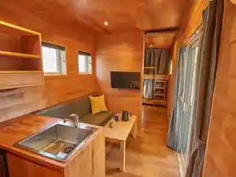
AGEKI BASE HOTEL
Inn in Kitasei, Inabe with a sauna; 5-minute drive from Inabe IC.
六石高原ホテル
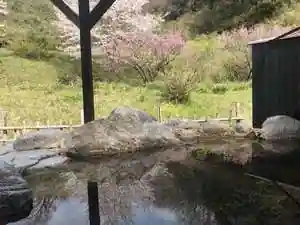
Roku Ishitaka Hara Hotel
Hotel in Kitasei, Inabe with parking and business travelers.
ＨＯＴＥＬ Ｒ９ Ｔｈｅ Ｙａｒｄ いなべ
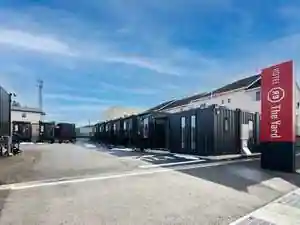
HOTEL R9 The Yard Inabe
いなべ市梅林公園 あわい
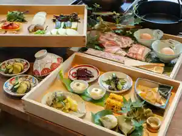
Inabe Shi Umebayashi Koen Awai
Nordisk Hygge Circles UGAKEI
Nordisk Hygge Circles UGAKEI
Dining
Patisserie Cafe こんま亭
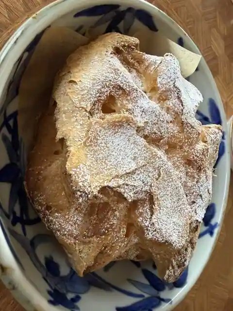
Patisserie Cafe Konma Tei
ラーメンショップ いなべ北勢店
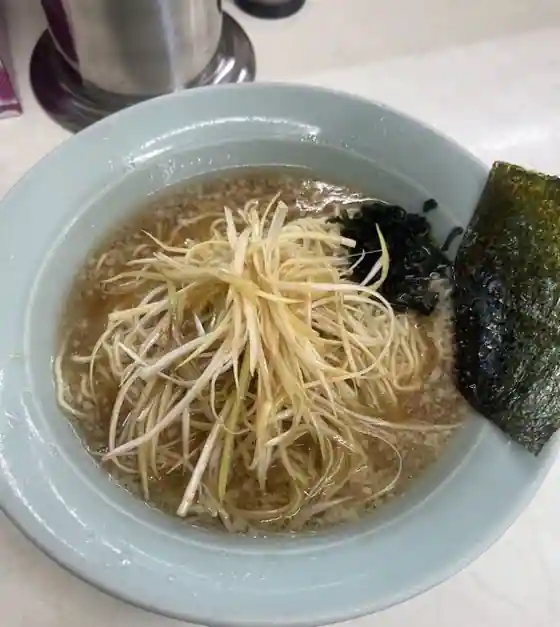
Ramen Shoppu Inabe Kita Sei
食肉加工屋 フチテイ
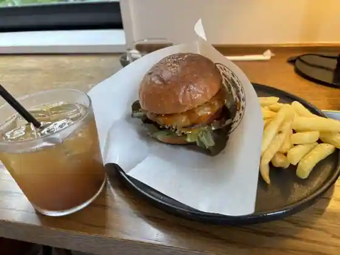
Shokuniku Kako Ya Fuchitei
新上木食堂
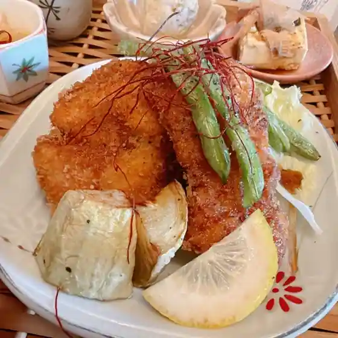
Shin Ueki Shokudo
魔法のぱん
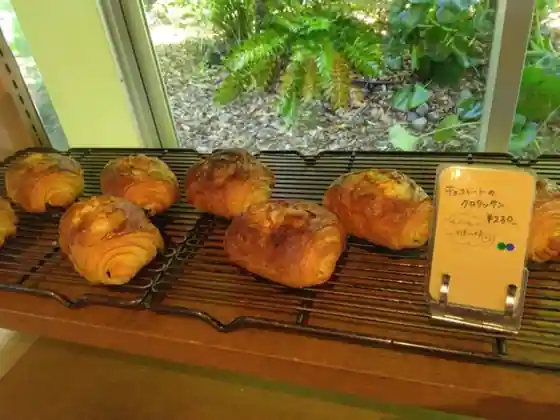
Maho Nopan
Noki
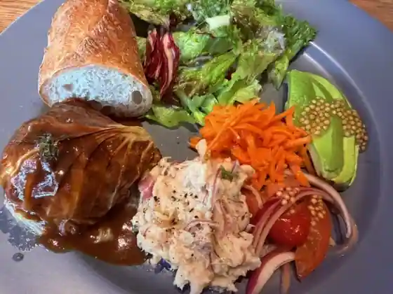
Noki
パティスリー・ギブリ
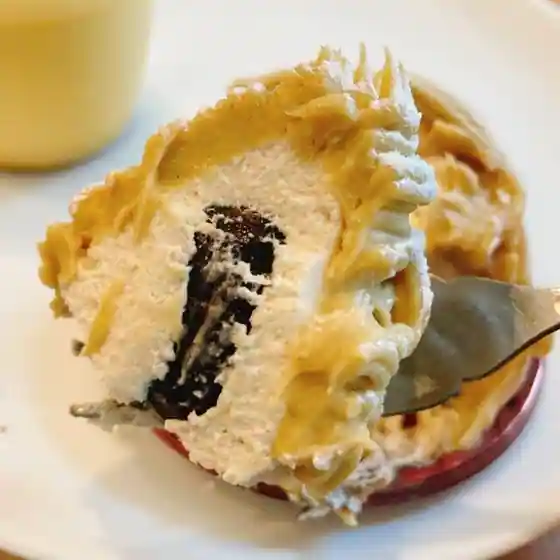
Pateisuri Giburi
nord
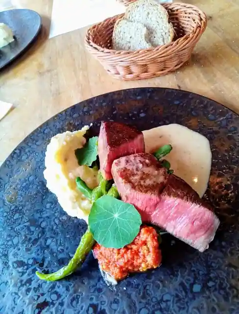
nord
中国・四川料理 龍宮城
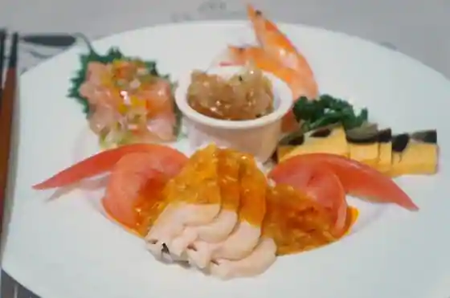
Chugoku Shisenryori Ryugujo
KOZZO
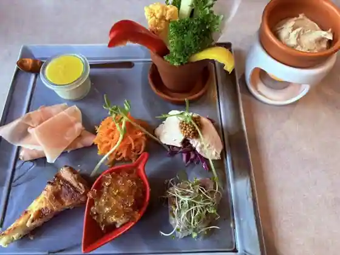
KOZZO
錦
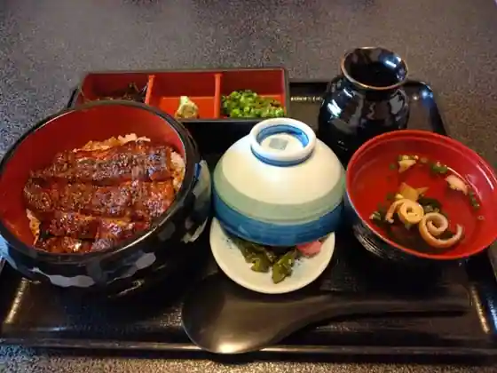
Nishiki
とんぼり
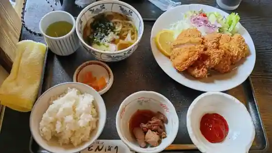
Tonbori
okudo 中村舎
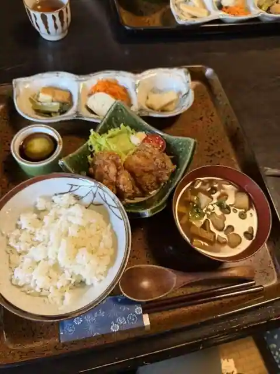
okudo Nakamura Sha
FUJIHUB
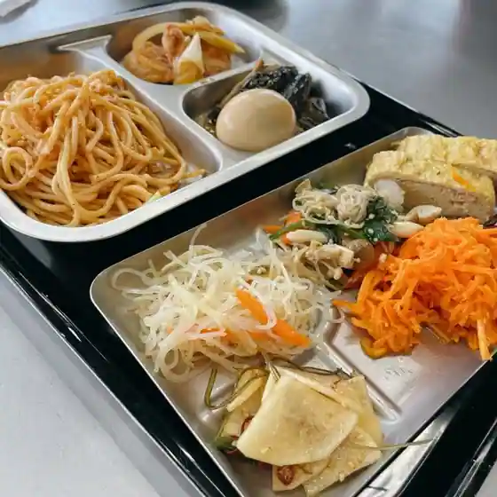
FUJIHUB
華鈴
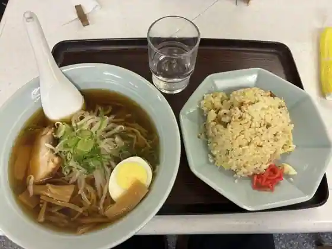
Karin
マル信 緑香園
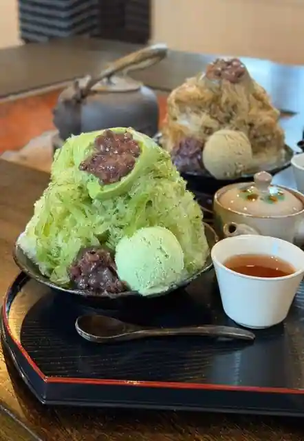
Maru Shin Midori Kaori Sono
じゃすみん 本店
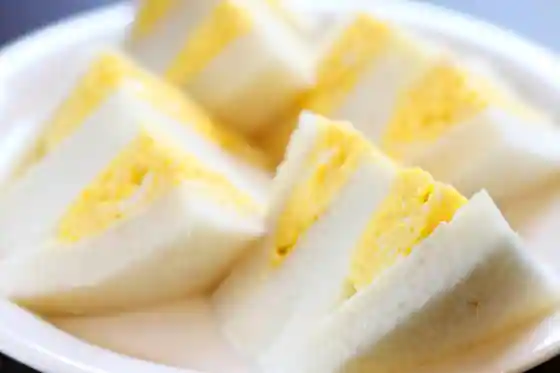
Jasumin Hon
フライベッカーサヤ
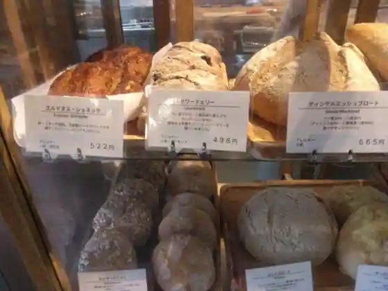
Furaibekkasaya
手打ち処 赤そば茶屋
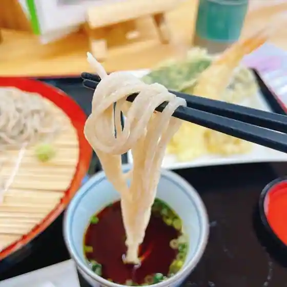
Teuchi Chi Tokoro Aka Soba Chaya
桃あか
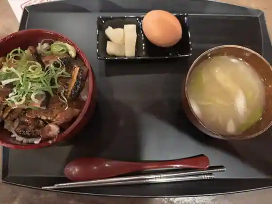
Momo Aka
半蔵
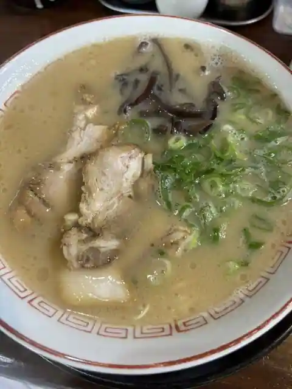
Hanzo
Kollwitz
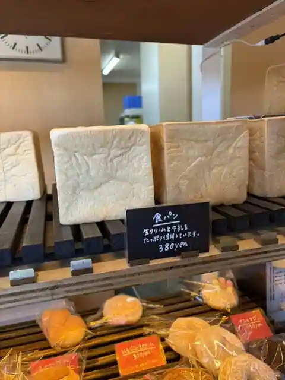
Kollwitz
COFFEE HOUSE punkt.
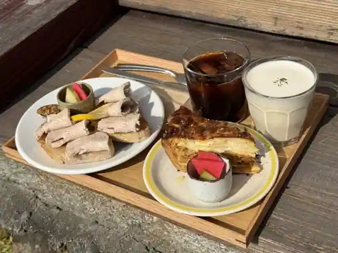
COFFEE HOUSE punkt.
BEARE
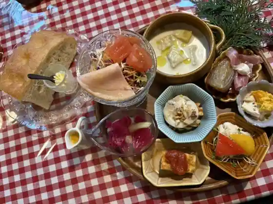
BEARE
Sights
Inabe Umebayashi Park Awai

Narutani Shrine

Inabe Onsui Puru

Manyo no Sato Park

Inabe Oizumi Eki Ensen no Nemofira
Fujiwara Gaku
Inabe Nogyo Park Umebayashi Park
Inabe Park
Inabe Kawa Sanpomichi
Suriireikusukantorii Club
Kanai Shrine
Nordisk Hygge Circles UGAKEI
Kiribayashi Kan
Yamaterasu -FUJIWARA OUTDOOR LIVING-
Ao Kawa Kyo Kyanpingu Park
Ryugagaku
Fisshingusankuchuari
Ga Ke Shrine
Oike Gaku
Kachi Izumi Tera
Hikari Hasu Tera
Gyo Jun Tera
Tanabe Joshi
Nagashimakantorii Club
Narutani Yama Shoho Tera
Torin Tera Shirataki
Fujiwara Park Gorufu Ba
Kita Sei Raidingu Farm
Fujiwara Gaku Shizen Science Museum
Uga Kei Sho Baku
Megane Hashi Nejiri Hashi
Inabe Nogyo Park Eko Fukushi Plaza
Omi Tsuka Burial Mound
Kokugen Nichiei Ishi
Saito Hara Ekimae Park
Experience Gakushu Keibintetsudo Museum
Kamotsu Tetsudo Museum